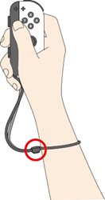

System and Accessories Precautions and Maintenance
- Do not disassemble or try to repair the Nintendo Switch console, components, or accessories. Doing so may damage them.
- Do not turn off the power, remove the game card, or remove the microSD card while data is being read or saved.
- Do not store the Nintendo Switch system or game cards in a humid place, on the floor, or in any location where they may contact moisture, dirt, dust, lint, or any other foreign material.
- Do not drop, hit, or otherwise abuse the Nintendo Switch console, components, game card or accessories. Doing so may damage the screen or other precision components of the Nintendo Switch console or accessories.
- Make sure all connections to the Nintendo Switch system are made carefully and inserted into the correct locations only. Hold plugs straight when inserting them into sockets.
- When disconnecting any plugs from the Nintendo Switch console or wall outlet, always carefully pull by the plug itself rather than by the cord.
- Do not expose the Nintendo Switch console, game cards or any of the Nintendo Switch components or accessories to extreme heat or cold. The Nintendo Switch display may become slower or may not work when the temperature is low. The screen will deteriorate at a high temperature. Take care not to expose the Nintendo Switch system to direct sunlight for extended periods of time.
- The screen may be damaged by sharp objects or pressure. Take care to protect the display from scratches or stains.
- Do not cover any console air intakes or vents while playing, to avoid overheating.
- To minimize the risk of damage to the Nintendo Switch system, only connect Nintendo-licensed accessories to any external connectors.
- Do not spill liquids on the console, game cards, or other components or accessories. If liquids get into the system, do not charge the system. Contact Nintendo customer service for further instructions. If you have questions or experience problems with your system or accessories, please visit our website at support.nintendo.com for troubleshooting information.
- To minimize the risk of image retention or screen burn-in occurring on the OLED screen, do not turn off the system's default sleep mode settings and take care to not display the same image on the OLED screen for extended periods of time.
- Do not peel off the anti-scattering adhesive film from the OLED screen of the console.
AC ADAPTER PRECAUTIONS
Please read and follow the precautions listed below when setting up and using the Nintendo Switch system. Failure to do so may result in damage to your Nintendo Switch system or accessories.
- Plug the AC adapter into an easily accessible standard wall outlet near your Nintendo Switch system.
- Make sure there is adequate ventilation around the AC adapter and Nintendo Switch system, and that any air vents are unobstructed.
- Be sure to connect the AC adapter to the correct voltage (100-240V).
- Do not expose the AC adapter or Nintendo Switch system to extremes of heat.
- Do not expose the AC adapter or Nintendo Switch system to any type of liquid or high humidity.
See the AC adapter for additional information.
GAME CARD PRECAUTIONS AND MAINTENANCE
- Avoid touching the connectors with your fingers.
- Always check the game card edge connector for foreign material before inserting the game card into the Nintendo Switch system.
IMPORTANT BATTERY GUIDELINES
To minimize the risk of damage to the Nintendo Switch system, when recharging the battery, use only Nintendo-licensed AC adapters.
CLEANING THE SYSTEM
If the screen becomes dirty, please clean it using a soft clean cloth, such as a lens or eyeglass cleaning cloth. If the outside of the Nintendo Switch system comes into contact with liquids, wipe clean with a soft, slightly damp cloth (use water only). If the cleaning procedures do not solve the problem, please try our website at support.nintendo.com for troubleshooting information.
NOTICE - CONTROLLERS
When detaching the Joy-Con from the Nintendo Switch console, press the button on the back and slide.
NOTICE - WEARING THE JOY-CON™ STRAP
When playing with a controller detached from the Nintendo Switch console, use the strap. Lock and fasten the strap securely. Hold the controller firmly. Do not let go of it.

Allow adequate room around you during game play.